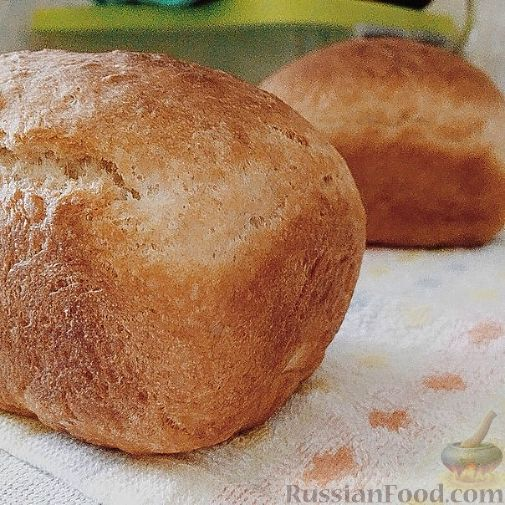
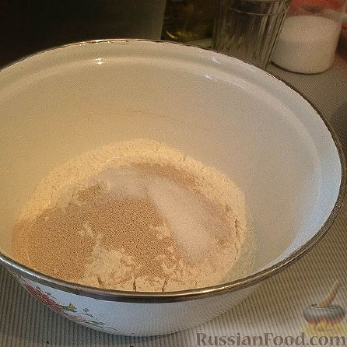
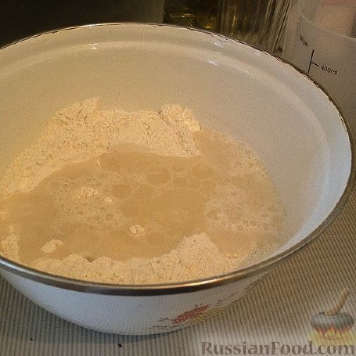
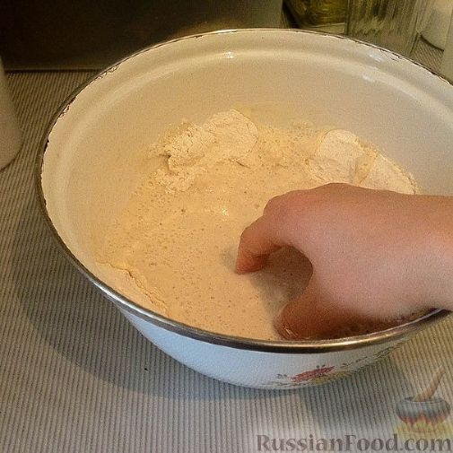
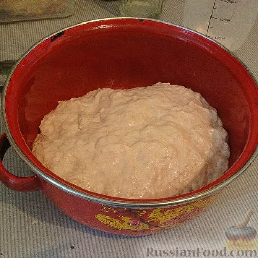
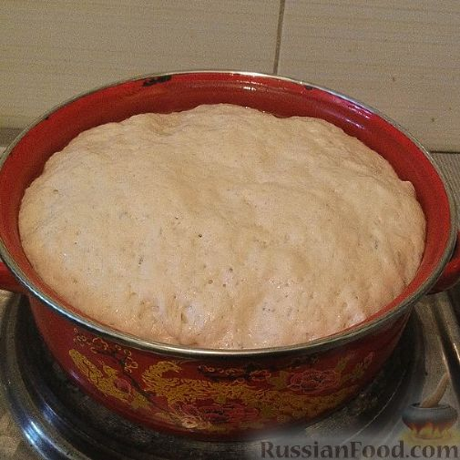
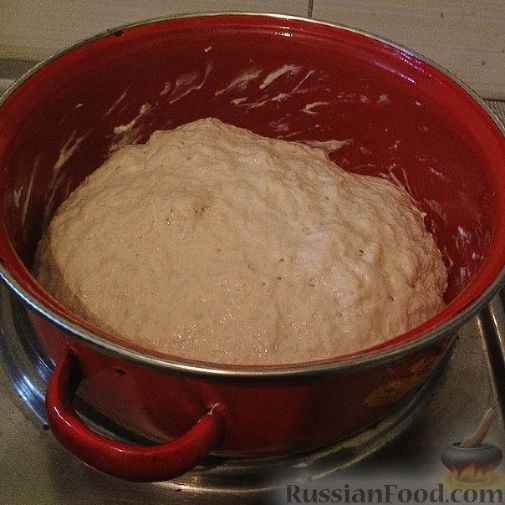
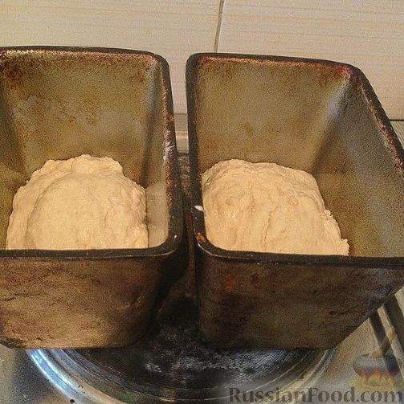
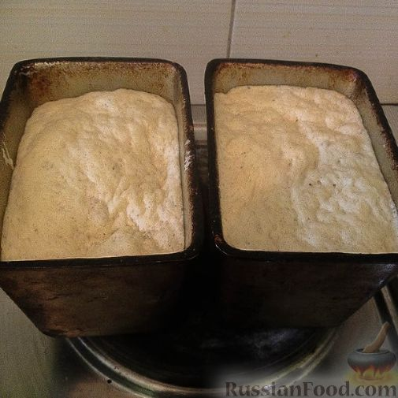

Домашний хлеб на сухих дрожжах

Нет ничего лучше и вкуснее домашнего хлеба! Я взял за основу один лёгкий рецепт и спустя несколько попыток вывела более-менее хороший рецепт, стремящийся к идеалу. Хлеб получается очень вкусный, хрустящий.
Продукты:
Мука - 2,5 стакана ёмкостью 250 мл (около 375 г) Вода тёплая - 1 стакан (250 мл) Масло растительное - 2,5 ст. ложки (+для смазывания миски и формы) Дрожжи сухие - 11 г Сахар - 1 ст. ложка Соль - 1,5 ч. ложки

Муку обязательно нужно просеять.

В чаше смешать муку, сухие дрожжи, сахар, соль. Перемешать.

Добавить воду и масло.

Замесить тесто.

Выложить тесто в другую емкость, смазанную растительным маслом.

Накрыть полотенцем, поставить в тепло минут на 30 (ну, или пока тесто хорошо не поднимется).

Когда поднимется, подбить тесто и снова оставить подниматься.

Когда второй раз поднимется, переложить тесто в формы, смазанные маслом. Оставить подниматься.

Когда тесто в формах поднимется, аккуратно, не тряся, поставить в духовку, предварительно разогретую до 200 градусов, на 40 минут.